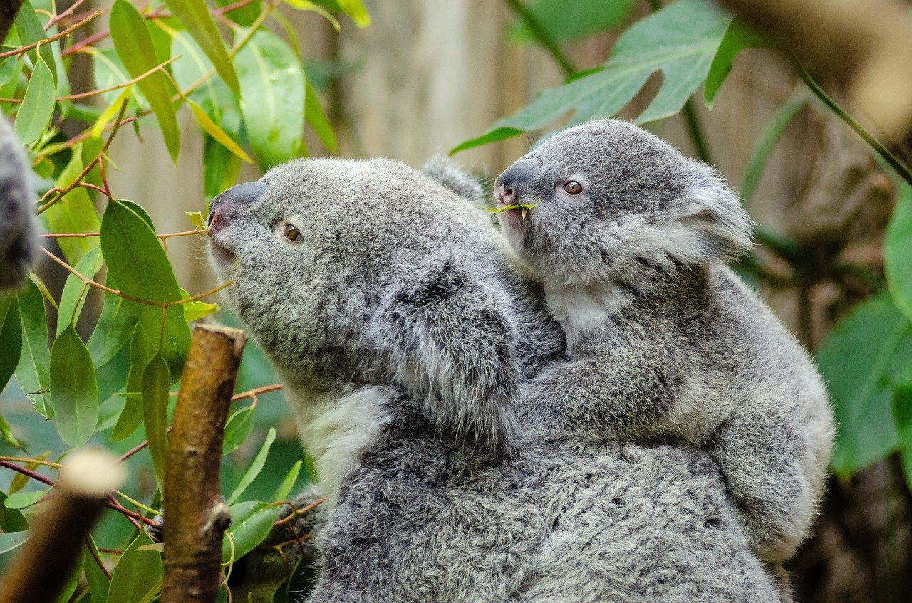
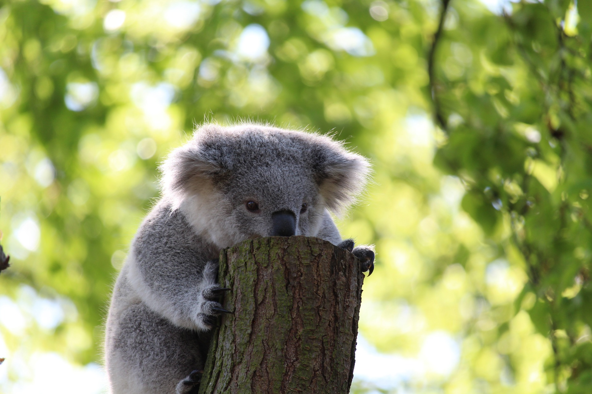
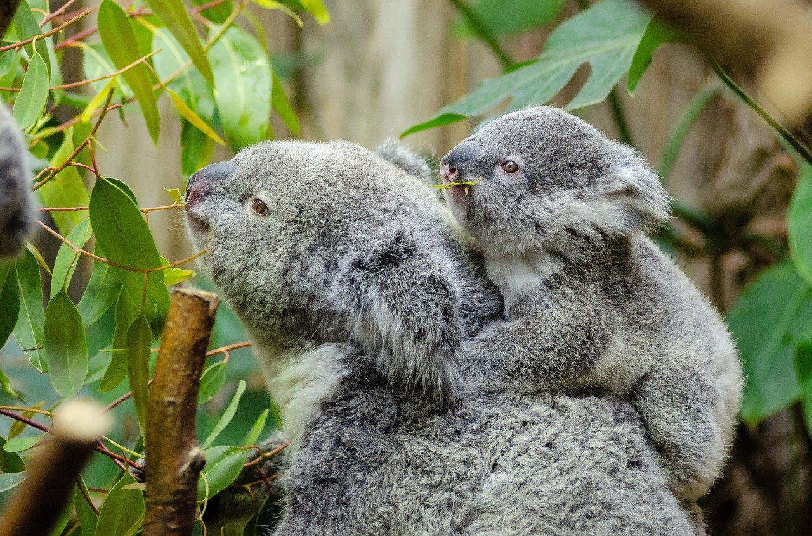
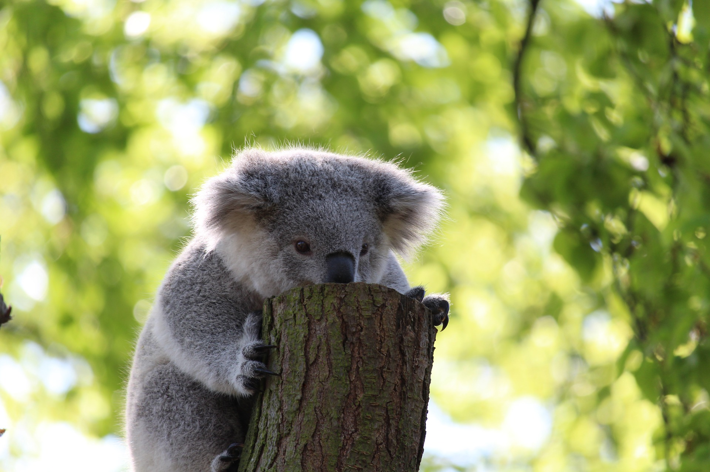
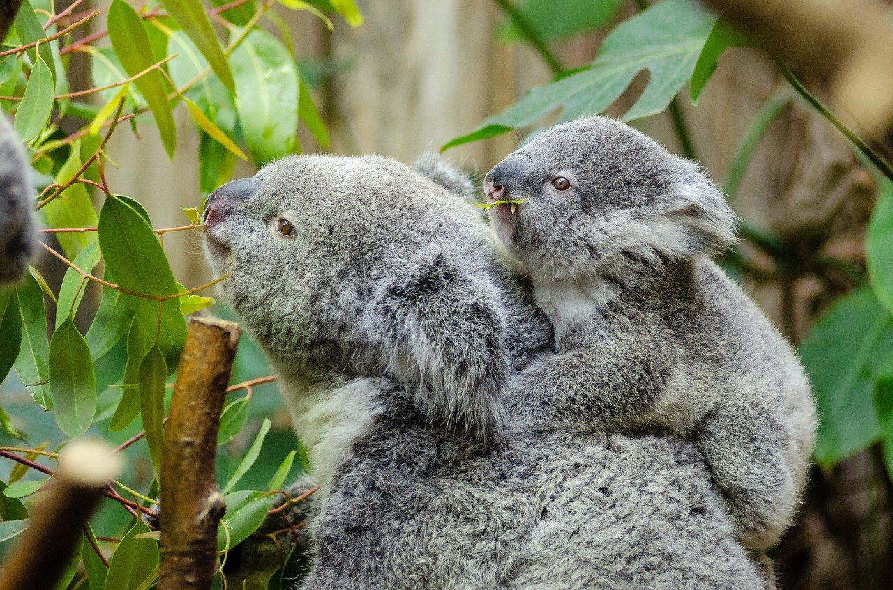
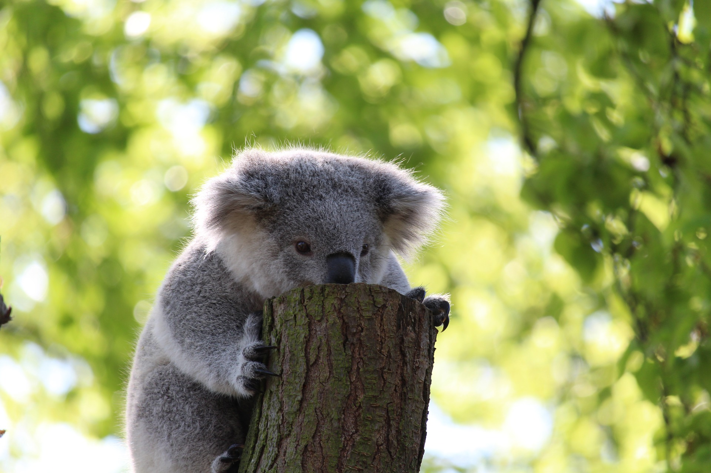
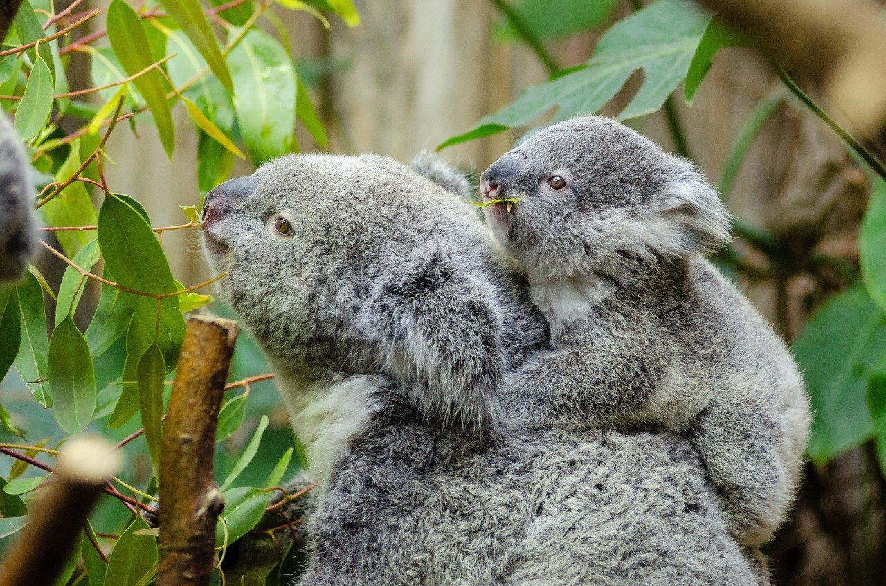
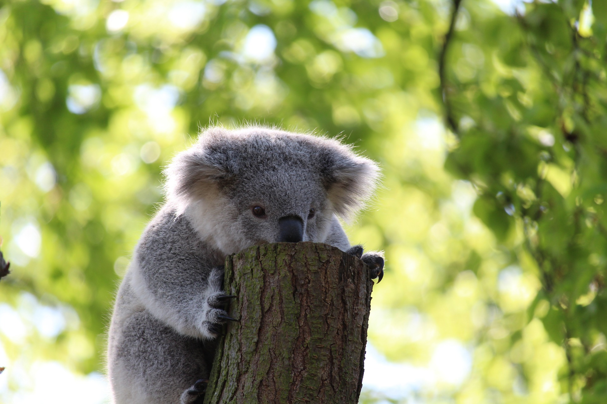

The koala belongs in the class of marsupials and mainly reside in either southeastern or eastern sides of Australia, specifically in New South Wales, Queensland, and Victoria. They have poor vision but strong hearing and strong smelliing abilities aids koalas in being able to protect themselves and find food. Koala's diet mainly consists of eucalypt leaves which provides them food and water, allowing them to stay on trees without having to climb down for long periods of time. The koala species have been endangered for the last decade due to constant deforestation, which destroyed a majority of the koalas homes and disease, which affected their life expectancy.